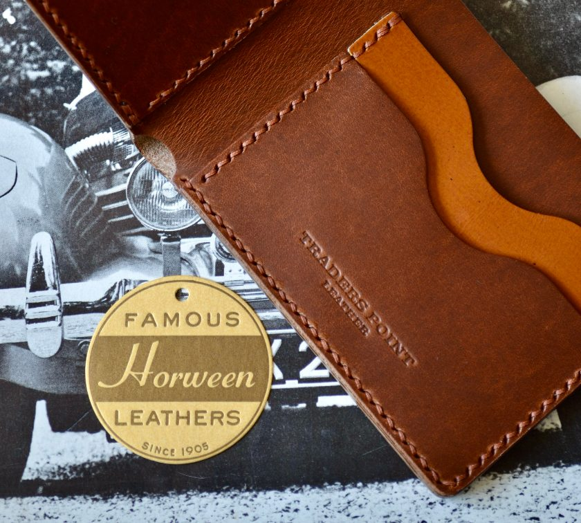
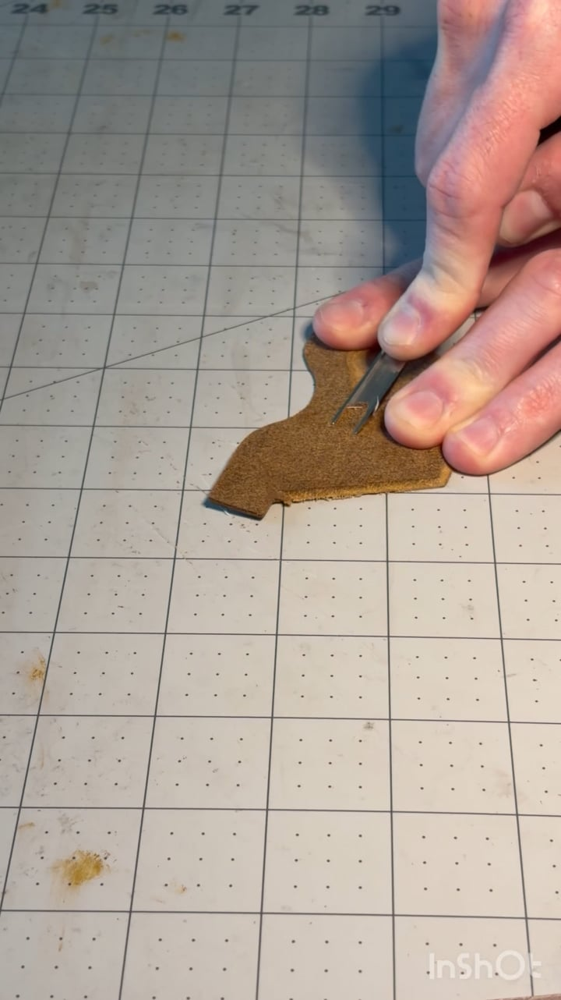
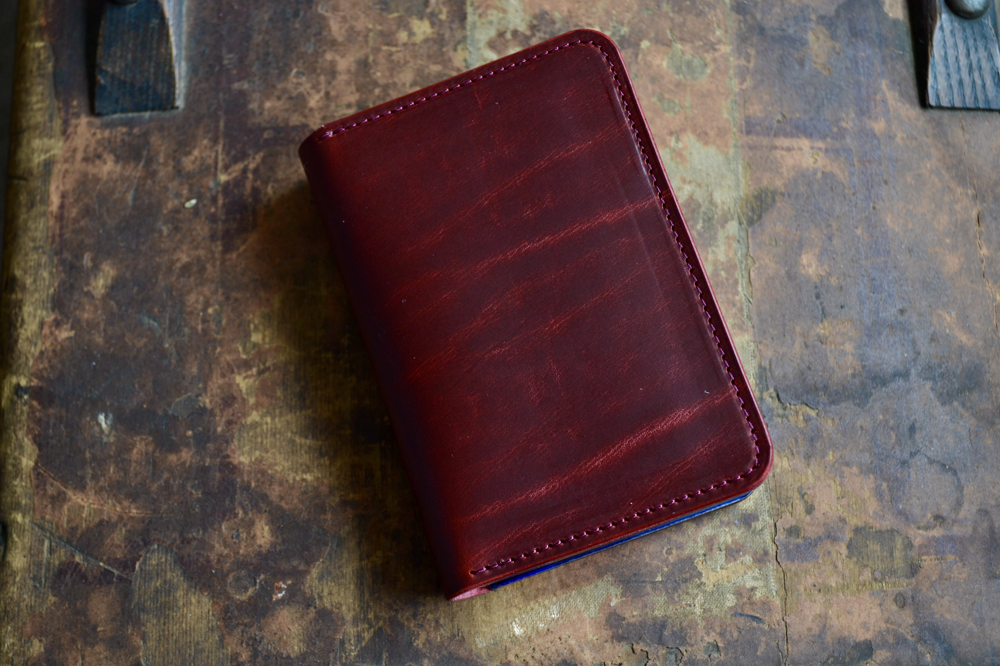
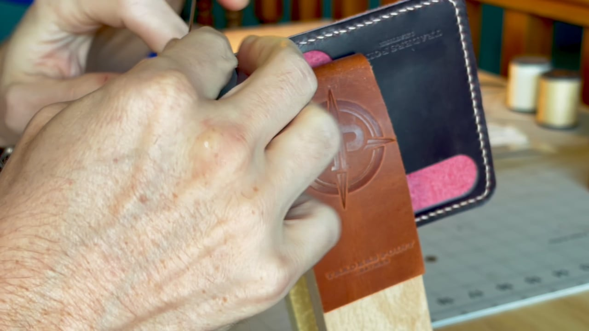
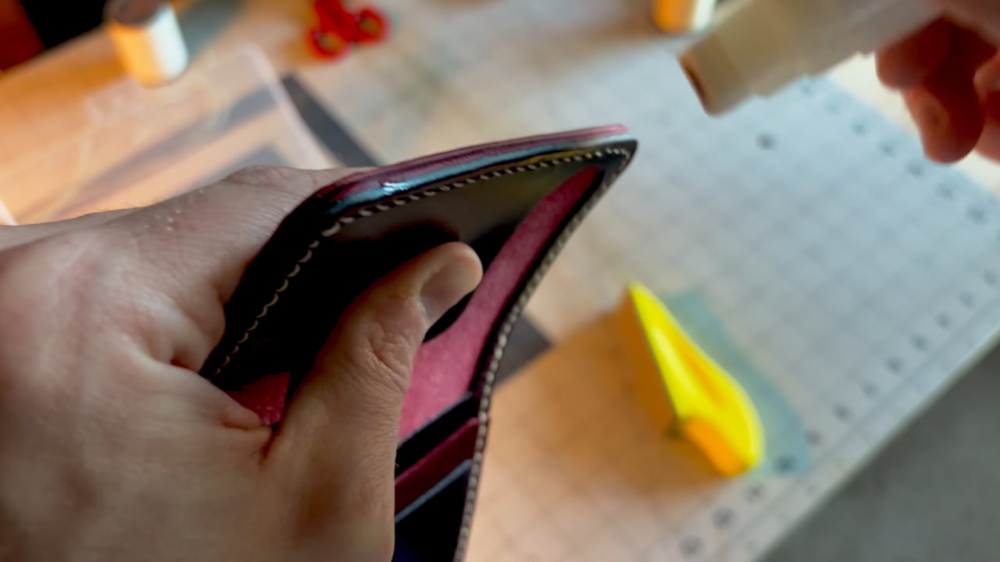
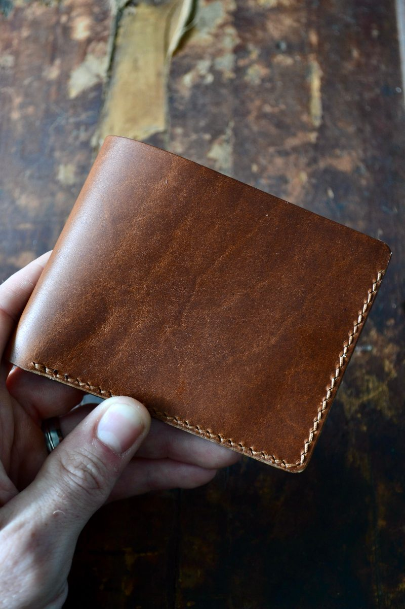
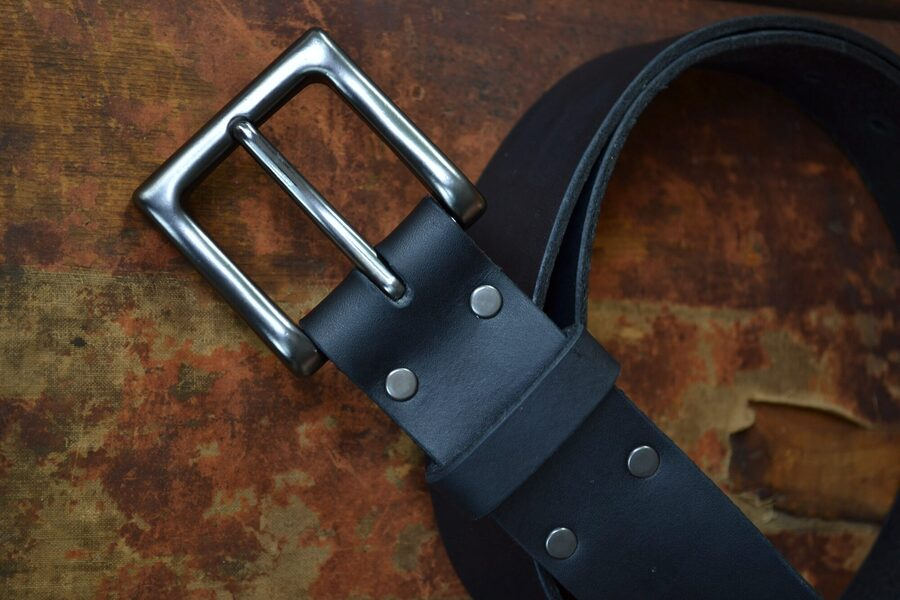
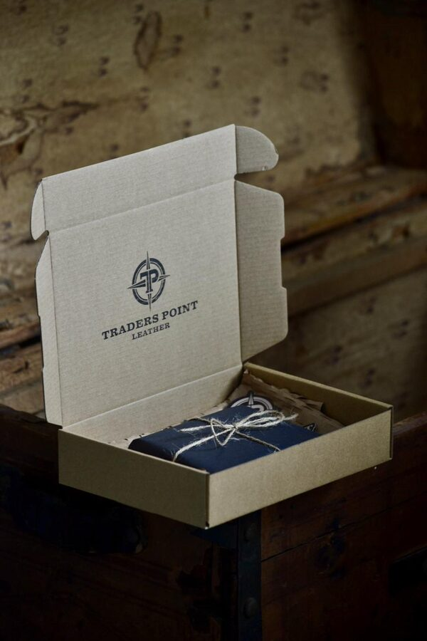

Simple · Elegant · Sturdy
Handcrafted leather goods made with care in Indiana. Built to outlast the phone in your pocket.

Explore the craft
The Process

Nothing here comes off a line. Each piece is cut from full-grain hide on the bench, marked out, saddle-stitched by hand and finished before the next one is started.
The edges are the tell. They are sanded, slicked and burnished until they are smooth and closed, and it is the first thing you notice when you pick one up.
That is why these take the time they do. It is also why they outlast the things they replace.

We source quality full-grain leathers — including Horween and Wickett & Craig — many of which develop a rich pull-up that darkens and patinas the more you carry it. Each piece gets better with age.

Every seam is saddle-stitched by hand with bonded nylon or bonded polyester thread — the same materials used in heavy-duty industrial applications. If one stitch is ever cut, the rest of the seam holds. A machine lockstitch unravels.

Every piece has its edges hand-burnished to a glossy, polished finish. It's what separates a handmade piece from a factory one. Run a thumb along the edge and you'll feel it.
The Details
What We Make

4 card slots and 2 pockets for extra cards and folded cash. Full-grain leather, saddle-stitched by hand with bonded nylon or polyester thread. Available in multiple colors.
From $115
Shop Wallets →
Solid brass hardware on a single piece of thick full-grain leather. No layers, no filler. This belt will outlast everything else in your closet.
$95
Shop Belts →
Every order ships in our branded box, wrapped in tissue and tied with natural twine. Ready to give — or to keep for yourself.
Browse All →Free shipping (US) · Ready to Ship leaves in 1–3 business days, Made to Order in 1–2 weeks · Delivery takes 5–7 days in the lower 48 · 30-day returns if undamaged (buyer pays return shipping)
Reviews
Our standard designs, built after you order. Or design your own.
Made to Order → Fully custom? Open the designer →